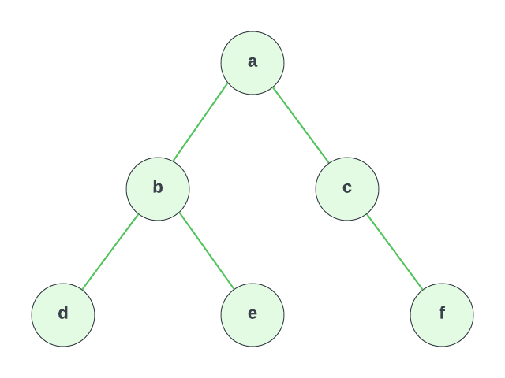

TreeNode Class & Manual Tree Creation
In this lesson, we will create a TreeNode class that will allow us to create a binary tree in TypeScript. We will create our tree manually for now by creating instances of the TreeNode class and assigning them to the left and right properties of other nodes. Later, we will create a BinaryTree class that will allow us to create a binary tree by passing in values.
Although this is an exercise, if you just want to follow along without trying it yourself, that is fine. You know what a binary tree is and you know how to create a class. If you want to try it yourself, here are the instructions.
Instructions
Create a class called TreeNode. This will represent a node in the tree. It will have a value property and a left and right property that will point to the left and right child nodes respectively. They will be initialized to undefined when the node is created.
Then use that class to create the following binary tree:

Hints
- The constructor will take a
valueparameter. - Initialize the
leftandrightproperties toundefinedin the constructor. - Create an instance for each node in the tree and assign the appropriate values to the
leftandrightproperties.
Solutions
Click For Solution
export class TreeNode<T> {
value: T;
left: TreeNode<T> | undefined = undefined;
right: TreeNode<T> | undefined = undefined;
constructor(value: T) {
this.value = value;
}
}
const a = new TreeNode("a");
const b = new TreeNode("b");
const c = new TreeNode("c");
const d = new TreeNode("d");
const e = new TreeNode("e");
const f = new TreeNode("f");
a.left = b;
a.right = c;
b.left = d;
b.right = e;
c.right = f;
Explanation
- Create the
TreeNodeclass with a constructor that takes avalueparameter. - Initialize the
leftandrightproperties toundefined. This is because we don't know what the left and right children will be when we create the node. We will assign them later. - Create an instance of the
TreeNodeclass for each node in the tree. - Assign the appropriate values to the
leftandrightproperties.
The code above implements exactly what we see in the diagram.